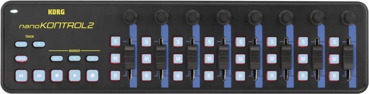

The Korg nanoKontrol features dedicated transport controls for easy control over your sessions.
The nanoKontrol brings the control potential to the next level, with new Track Select and Marker controls.
Now you can set markers and select tracks in your DAW directly from the nanoKontrol, so you can have even less dependence on your mouse!
Select quantity: